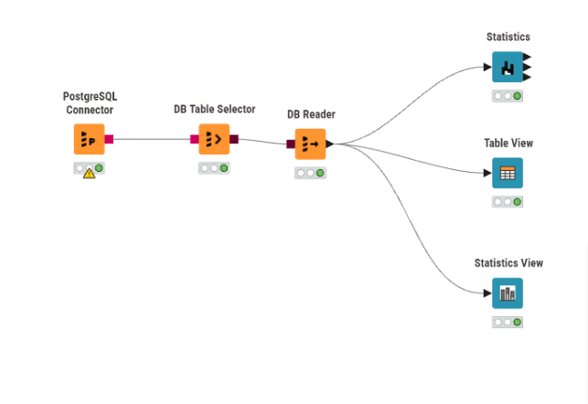
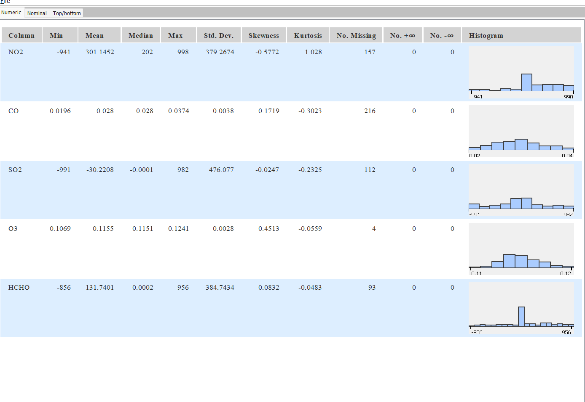

Tugas Pertemuan 2#
Proses pengumpulan data kedalam format .csv#
import pandas as pd
import xarray as xr
unsur_polutan = ["NO2", "CO", "SO2", "O3", "HCHO"]
list_df = []
for polutan in unsur_polutan:
# Membaca file NetCDF
data = xr.load_dataset(f"kualitas_udara_{polutan}.nc")
# Konversi data xarray menjadi DataFrame Pandas
# reset_index() digunakan untuk memunculkan koordinat waktu 't' menjadi kolom
df_temp = data[polutan].to_dataframe().reset_index()
# Memfilter hanya mengambil kolom waktu ('t') dan kolom nilai polutannya
df_temp = df_temp[['t', polutan]]
# Mengatur kolom 't' sebagai Index agar penggabungan tabel berpatokan pada tanggal
df_temp.set_index('t', inplace=True)
list_df.append(df_temp)
# Menggabungkan semua tabel polutan berdasarkan tanggal (axis=1 menggabung ke samping)
df_gabungan = pd.concat(list_df, axis=1)
# Mengembalikan index tanggal menjadi kolom biasa dan mengganti namanya
df_gabungan.reset_index(inplace=True)
df_gabungan.rename(columns={'index': 'tanggal', 't': 'tanggal'}, inplace=True)
# Format kolom tanggal menjadi YYYY-MM-DD agar mudah dibaca PostgreSQL
df_gabungan['tanggal'] = pd.to_datetime(df_gabungan['tanggal']).dt.date
# Menyimpan hasil ke format CSV
df_gabungan.to_csv("data_kualitas_udara.csv", index=False)
upload csv ke postgre#
Aiven.io#
Langkah Langkah yang perlu dilakukan :
Membuka aiven.io dan login
Membuat project baru dan memilih postgresql
setelah selesai, pastikan postgre yang baru dibuat ada dalam status ON
klik nama project untuk melihat data lengkap mengenai host, nama db, password, dan port
DBEAVER#
Pada DB eaver, kita akan menyambungkan project di aiven ke dbeaver, setelah itu akan kita upload file .csv yang kita miliki ke aiven dengan perantara dbeaver
Langkah Langkah yang perlu dilakukan :
buka DBeaver
klik menu database pada navigasi atas
pilih “New Database Connection”
masukkan hostname, dbname, username, dan password yang ada di aiven ke dbeaver
kemudian klik next, sampai pada tipe data, perhatikan apakah tipe data sudah sesuai atau belum
jika type data sudah sesuai, klik next atau proceed
KNIME#
pada tahap ini, kita sudah memiliki data di aiven.io, sehingga kita tinggal membangung workflownya
Langkah Langkah yang perlu dilakukan :
Buka KNIME
Pilih create new project atau ikon +
di menu kiri, pilih “Nodes” kemudian search postgre
pilih “PostgreSQL Connector”, kemudian konfigurasi menyesuaikan aiven
pilih nodes lagi, lalu search “DB Table Selector”, pilih schema public kemudian pilih data
klik nodes lagi, lalu search “DB reader”
lalu di nodes, cari 3 nodes ini :Statistics, Table View, Statistics view
jika sudah, klik icon statistics kemudian klik kanan dan pilih open view atau langsung pencet f10
HASIL WORKFLOW#

HASIL STATISTIC VIEW#

Penjelasan Masing Masing Properti#
Column Nama fitur atau variabel kolom yang dianalisis dari database.
Cara Penentuan: Mengambil langsung header dari tabel dataset (contoh: NO2, CO).
Min (Minimum) Nilai terkecil atau terendah dalam sekumpulan data di kolom tersebut.
Rumus/Cara: Urutkan seluruh data dari nilai terkecil hingga terbesar, lalu ambil nilai urutan pertama.
\(\min(X)\)
Mean (Rata-rata) Nilai rata-rata aritmatika dari keseluruhan data. Menunjukkan titik berat dari sekumpulan angka tersebut.
Rumus/Cara: Jumlahkan seluruh nilai data, lalu bagi dengan total banyaknya observasi (\(n\)).
Median (Nilai Tengah) Nilai yang membagi data yang sudah terurut menjadi dua bagian yang sama banyak. Median tidak mudah terpengaruh oleh pencilan (outlier).
Rumus/Cara: Urutkan observasi dari yang terkecil. Jika total data (\(n\)) ganjil, ambil tepat di tengah. Jika genap, jumlahkan dua nilai di tengah lalu bagi dua.
Untuk \(n\) ganjil: \(x_{\frac{n+1}{2}}\) Untuk \(n\) genap: \(\frac{x_{\frac{n}{2}} + x_{\frac{n}{2} + 1}}{2}\)
Max (Maksimum) Nilai paling besar atau tertinggi dari seluruh baris data.
Rumus/Cara: Urutkan seluruh data, lalu ambil angka urutan terakhir.
\(\max(X)\)
Std. Dev. (Standar Deviasi) Ukuran simpangan baku yang menunjukkan seberapa jauh variasi sebaran data menyimpang dari rata-ratanya (Mean). Semakin kecil nilainya, semakin data mengelompok di dekat rata-rata.
Rumus/Cara: Hitung selisih tiap data terhadap rata-rata, kuadratkan, jumlahkan, bagi dengan total data dikurangi satu, lalu tarik akar kuadratnya (akar dari varians sampel).
Skewness (Kemencengan) Ukuran ketidaksimetrisan kurva distribusi frekuensi data. Nilai \(> 0\) berarti ekor distribusi memanjang ke kanan. Nilai \(< 0\) berarti ekor ke kiri. Nilai \(0\) berarti simetris.
Rumus/Cara: Menghitung rata-rata deviasi pangkat tiga dibagi standar deviasi pangkat tiga.
Kurtosis (Keruncingan) Mengukur tingkat keruncingan kurva dan ketebalan “ekor” distribusi. Nilai yang tinggi menunjukkan bahwa data memiliki lebih banyak nilai ekstrem (outlier) dibanding distribusi normal.
Rumus/Cara: Menghitung deviasi pangkat empat dibagi standar deviasi pangkat empat (dikurangi 3 untuk Excess Kurtosis acuan kurva normal).
No. Missing Total baris yang datanya kosong, gagal terbaca, atau bernilai NULL. Cara Menghitung: Sistem memindai kolom dan menghitung jumlah sel yang tidak berisi tipe data angka yang valid.
No. +\(\infty\) (Plus Infinity) Total data yang terdeteksi sebagai nilai tak terhingga positif.
Cara Menghitung: Sistem menghitung jumlah sel yang bernilai \(+\infty\) (biasanya muncul akibat komputasi bilangan positif dibagi nol).
No. -\(\infty\) (Minus Infinity) Total data yang terdeteksi sebagai tak terhingga negatif.
Cara Menghitung: Sistem menghitung jumlah sel yang bernilai \(-\infty\) (akibat pembagian bilangan negatif dengan nol).
Histogram Representasi grafik batang dari rentang sebaran frekuensi data.
Cara Menghitung: Membagi rentang nilai (dari Min hingga Max) menjadi beberapa keranjang (interval/bin), lalu menghitung jumlah data yang jatuh di dalam masing-masing interval tersebut.
Perhitungan yang dihasilkan dari setiap properti#
Kolom : NO2#
Min : Hasil properti ini diambil dengan mengurutkan 186 data valid dari angka terkecil hingga terbesar, lalu mengambil nilai pada urutan pertama.
Hasil : -941
Mean : Hasil properti ini dihitung dengan menjumlahkan seluruh 186 angka valid di kolom tersebut (total penjumlahan 56.013), lalu membaginya dengan jumlah baris data valid (\(n = 186\)).
Hasil : 301.1452
Median : Hasil properti ini didapat dari mencari letak nilai tengah setelah keseluruhan data diurutkan. Karena jumlah data genap (186), nilainya diambil dari penjumlahan data urutan ke-93 (202) dan ke-94 (202), lalu dibagi dua.
Hasil : 202
Max : Hasil properti ini diambil dengan melihat angka terakhir atau yang paling besar nilainya setelah keseluruhan 186 data valid diurutkan.
Hasil : 998
Std. Dev. : Hasil properti ini dihitung dari selisih setiap 186 data terhadap nilai rata-rata (301.1452). Selisih tersebut dikuadratkan, dijumlahkan, dibagi \(n-1\) (yaitu 185) untuk mendapat varians sampel, lalu ditarik akar kuadratnya.
Hasil : 379.2674
Kurtosis : Hasil properti ini dihitung menggunakan rumus deviasi pangkat empat untuk melihat tingkat keruncingan kurva puncak data tersebut jika dibandingkan dengan kurva lonceng distribusi normal.
Hasil : 1.028
Skewness : Hasil properti ini dihitung menggunakan rasio deviasi pangkat tiga untuk mengukur arah kemiringan sebaran angka (karena hasilnya negatif, persebaran angka lebih padat di sisi kanan).
Hasil : -0.5772
No. Missing : Hasil properti ini diambil dengan memindai baris dari atas ke bawah dan menghitung jumlah sel baris yang kosong atau tidak berisi angka valid.
Hasil : 157 baris kosong, total baris 343, sisa data valid 186 baris.
No. +unlimited : Hasil properti ini diambil dari pendeteksian jumlah data riil yang bernilai tak terhingga positif akibat operasi sistem (misalnya pembagian bilangan positif dengan nol).
Hasil : 0
No. -unlimited : Hasil properti ini diambil dari pendeteksian jumlah data yang bernilai tak terhingga negatif.
Hasil : 0
Kolom : CO#
Min : Hasil properti ini diambil dengan mengurutkan 127 data valid dari angka terkecil hingga terbesar, lalu mengambil nilai pada urutan pertama.
Hasil : 0.0196
Mean : Hasil properti ini dihitung dengan menjumlahkan seluruh 127 angka valid di kolom tersebut (total penjumlahan sekitar 3.5553), lalu membaginya dengan jumlah baris data valid (\(n = 127\)).
Hasil : 0.028 (hasil pembulatan dari 0.02799…)
Median : Hasil properti ini didapat dari mencari letak nilai tengah setelah keseluruhan data diurutkan. Karena jumlah data ganjil (127), nilainya diambil dari angka yang tepat berada di urutan ke-64.
Hasil : 0.028
Max : Hasil properti ini diambil dengan melihat angka terakhir atau yang paling besar nilainya setelah keseluruhan 127 data valid diurutkan.
Hasil : 0.0374
Std. Dev. : Hasil properti ini dihitung dari selisih setiap 127 data terhadap nilai rata-rata (0.028). Selisih tersebut dikuadratkan, dijumlahkan, dibagi \(n-1\) (yaitu 126) untuk mendapat varians sampel, lalu ditarik akar kuadratnya.
Hasil : 0.0038
Kurtosis : Hasil properti ini dihitung menggunakan rumus deviasi pangkat empat untuk melihat tingkat keruncingan kurva puncak data tersebut jika dibandingkan dengan kurva lonceng distribusi normal. (Nilai negatif berarti puncak kurva lebih datar/landai).
Hasil : -0.3023
Skewness : Hasil properti ini dihitung menggunakan rasio deviasi pangkat tiga untuk mengukur arah kemiringan sebaran angka. (Karena hasilnya positif, persebaran angka sedikit lebih padat di sisi kiri, dengan ekor memanjang ke kanan).
Hasil : 0.1719
No. Missing : Hasil properti ini diambil dengan memindai baris dari atas ke bawah dan menghitung jumlah sel baris yang kosong atau tidak berisi angka valid.
Hasil : 216 baris kosong, total baris 343, sisa data valid 127 baris.
No. +unlimited : Hasil properti ini diambil dari pendeteksian jumlah data riil yang bernilai tak terhingga positif akibat operasi sistem (misalnya pembagian bilangan positif dengan nol).
Hasil : 0
No. -unlimited : Hasil properti ini diambil dari pendeteksian jumlah data yang bernilai tak terhingga negatif.
Hasil : 0
Kolom : SO2#
Min : Hasil properti ini diambil dengan mengurutkan 231 data valid dari angka terkecil hingga terbesar, lalu mengambil nilai pada urutan pertama.
Hasil : -991
Mean : Hasil properti ini dihitung dengan menjumlahkan seluruh 231 angka valid di kolom tersebut, lalu membaginya dengan jumlah baris data valid (\(n = 231\)).
Hasil : -30.2208 (hasil pembulatan dari -30.22077…)
Median : Hasil properti ini didapat dari mencari letak nilai tengah setelah keseluruhan data diurutkan. Karena jumlah data ganjil (231), nilainya diambil dari angka yang tepat berada di urutan ke-116.
Hasil : -0.0001 (hasil pembulatan dari -0.000107…)
Max : Hasil properti ini diambil dengan melihat angka terakhir atau yang paling besar nilainya setelah keseluruhan 231 data valid diurutkan.
Hasil : 982
Std. Dev. : Hasil properti ini dihitung dari selisih setiap 231 data terhadap nilai rata-rata (-30.2208). Selisih tersebut dikuadratkan, dijumlahkan, dibagi \(n-1\) (yaitu 230) untuk mendapat varians sampel, lalu ditarik akar kuadratnya.
Hasil : 476.077 (hasil pembulatan dari 476.0769…)
Kurtosis : Hasil properti ini dihitung menggunakan rumus deviasi pangkat empat untuk melihat tingkat keruncingan kurva puncak data tersebut jika dibandingkan dengan kurva lonceng distribusi normal.
Hasil : -0.2325
Skewness : Hasil properti ini dihitung menggunakan rasio deviasi pangkat tiga untuk mengukur arah kemiringan sebaran angka.
Hasil : -0.0247
No. Missing : Hasil properti ini diambil dengan memindai baris dari atas ke bawah dan menghitung jumlah sel baris yang kosong atau tidak berisi angka valid.
Hasil : 112 baris kosong, total baris 343, sisa data valid 231 baris.
No. +unlimited : Hasil properti ini diambil dari pendeteksian jumlah data riil yang bernilai tak terhingga positif akibat operasi sistem.
Hasil : 0
No. -unlimited : Hasil properti ini diambil dari pendeteksian jumlah data yang bernilai tak terhingga negatif.
Hasil : 0
Kolom : O3#
Min : Hasil properti ini diambil dengan mengurutkan 339 data valid dari angka terkecil hingga terbesar, lalu mengambil nilai pada urutan pertama.
Hasil : 0.1069 (hasil pembulatan dari 0.10688…)
Mean : Hasil properti ini dihitung dengan menjumlahkan seluruh 339 angka valid di kolom tersebut, lalu membaginya dengan jumlah baris data valid (\(n = 339\)).
Hasil : 0.1155 (hasil pembulatan dari 0.11546…)
Median : Hasil properti ini didapat dari mencari letak nilai tengah setelah keseluruhan data diurutkan. Karena jumlah data ganjil (339), nilainya diambil dari angka yang tepat berada di urutan ke-170.
Hasil : 0.1151 (hasil pembulatan dari 0.11512…)
Max : Hasil properti ini diambil dengan melihat angka terakhir atau yang paling besar nilainya setelah keseluruhan 339 data valid diurutkan.
Hasil : 0.1241 (hasil pembulatan dari 0.12406…)
Std. Dev. : Hasil properti ini dihitung dari selisih setiap 339 data terhadap nilai rata-rata (0.1155). Selisih tersebut dikuadratkan, dijumlahkan, dibagi \(n-1\) (yaitu 338) untuk mendapat varians sampel, lalu ditarik akar kuadratnya.
Hasil : 0.0028
Kurtosis : Hasil properti ini dihitung menggunakan rumus deviasi pangkat empat untuk melihat tingkat keruncingan kurva puncak data tersebut jika dibandingkan dengan kurva lonceng distribusi normal.
Hasil : -0.0559
Skewness : Hasil properti ini dihitung menggunakan rasio deviasi pangkat tiga untuk mengukur arah kemiringan sebaran angka.
Hasil : 0.4513
No. Missing : Hasil properti ini diambil dengan memindai baris dari atas ke bawah dan menghitung jumlah sel baris yang kosong atau tidak berisi angka valid.
Hasil : 4 baris kosong, total baris 343, sisa data valid 339 baris.
No. +unlimited : Hasil properti ini diambil dari pendeteksian jumlah data riil yang bernilai tak terhingga positif akibat operasi sistem.
Hasil : 0
No. -unlimited : Hasil properti ini diambil dari pendeteksian jumlah data yang bernilai tak terhingga negatif.
Hasil : 0
Kolom : HCHO#
Min : Hasil properti ini diambil dengan mengurutkan 250 data valid dari angka terkecil hingga terbesar, lalu mengambil nilai pada urutan pertama.
Hasil : -856
Mean : Hasil properti ini dihitung dengan menjumlahkan seluruh 250 angka valid di kolom tersebut, lalu membaginya dengan jumlah baris data valid (\(n = 250\)).
Hasil : 131.7401 (hasil pembulatan dari 131.74007…)
Median : Hasil properti ini didapat dari mencari letak nilai tengah setelah keseluruhan data diurutkan. Karena jumlah data genap (250), nilainya diambil dari menjumlahkan angka urutan ke-125 dan ke-126, lalu dibagi dua.
Hasil : 0.0002 (hasil pembulatan dari 0.000223…)
Max : Hasil properti ini diambil dengan melihat angka terakhir atau yang paling besar nilainya setelah keseluruhan 250 data valid diurutkan.
Hasil : 956
Std. Dev. : Hasil properti ini dihitung dari selisih setiap 250 data terhadap nilai rata-rata (131.7401). Selisih tersebut dikuadratkan, dijumlahkan, dibagi \(n-1\) (yaitu 249) untuk mendapat varians sampel, lalu ditarik akar kuadratnya.
Hasil : 384.7434
Kurtosis : Hasil properti ini dihitung menggunakan rumus deviasi pangkat empat untuk melihat tingkat keruncingan kurva puncak data tersebut jika dibandingkan dengan kurva lonceng distribusi normal.
Hasil : -0.0483
Skewness : Hasil properti ini dihitung menggunakan rasio deviasi pangkat tiga untuk mengukur arah kemiringan sebaran angka.
Hasil : 0.0832
No. Missing : Hasil properti ini diambil dengan memindai baris dari atas ke bawah dan menghitung jumlah sel baris yang kosong atau tidak berisi angka valid.
Hasil : 93 baris kosong, total baris 343, sisa data valid 250 baris.
No. +unlimited : Hasil properti ini diambil dari pendeteksian jumlah data riil yang bernilai tak terhingga positif akibat operasi sistem.
Hasil : 0
No. -unlimited : Hasil properti ini diambil dari pendeteksian jumlah data yang bernilai tak terhingga negatif.
Hasil : 0